Chapter 7 assumed the whole program is in memory at some point, so a program can be no larger than physical memory. Virtual memory removes that limit: only the pages in use need to be in memory. This chapter covers demand paging, page faults, page replacement, frame allocation, and thrashing.
1. Swapping and Virtual Memory
Swapping: a process can be moved temporarily out of memory to a backing store, then brought back to continue. The backing store is a fast disk large enough for copies of all users’ memory images, with direct access to them. Most of the swap time is transfer time, proportional to the amount of memory swapped. Swapping makes space for processes that need more memory and raises the degree of multiprogramming.
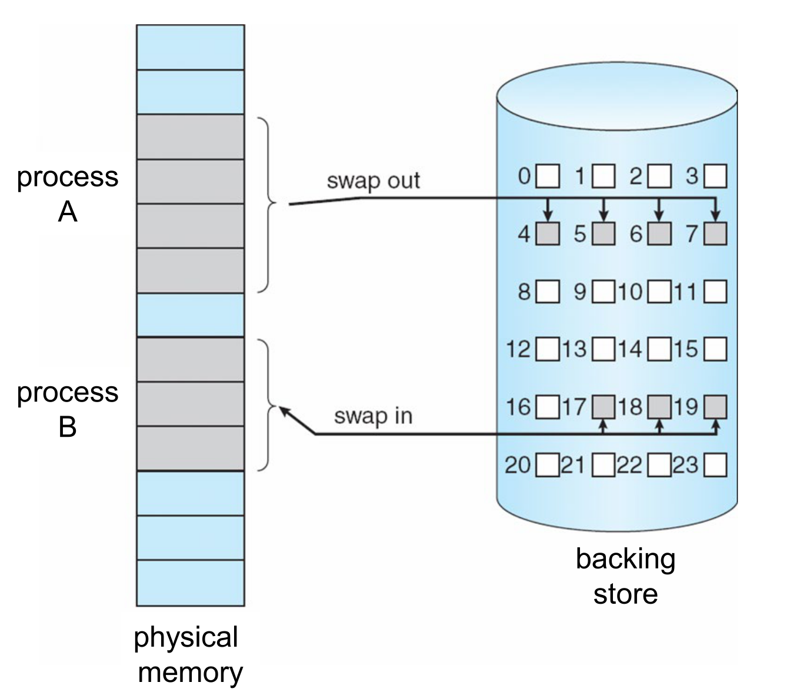
Virtual memory separates the user’s logical memory from physical memory:
- the logical address space can be much larger than physical memory; its size is limited by the computer’s address scheme, not by the physical memory size;
- only part of the program needs to be in memory → more processes in memory → higher CPU utilization;
- pages must be able to move in and out.
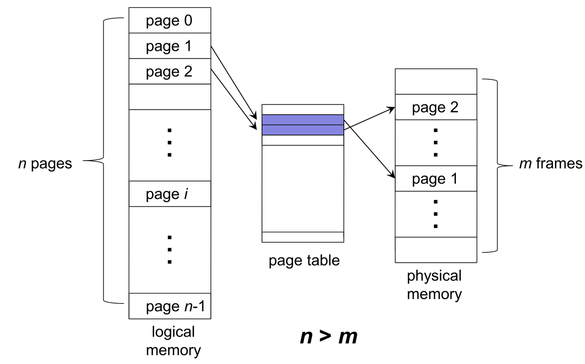
Virtual memory is implemented mostly with demand paging (demand segmentation also exists).
2. Demand Paging and Page Faults
A page is brought into memory only when a reference to it is generated. Each page-table entry has a valid–invalid bit:
- v: the page is in memory; the entry holds its frame number.
- i: the page is not in memory; the entry holds the page’s address on disk.
- Initially every entry is i. A translation that finds i causes a page fault.
The backing store always holds the entire process image.
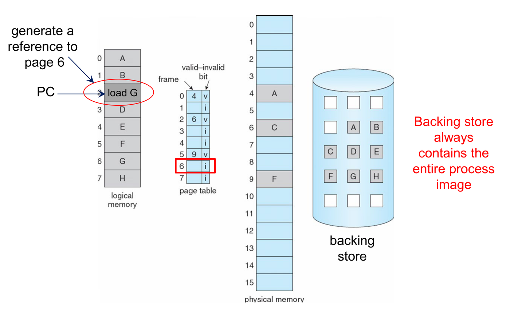
Handling a page fault (lecture steps):
- On a reference, the page table is checked to see whether the page is in memory.
- If not, the CPU traps to the OS, and the state of the interrupted process is saved.
- The OS uses the page-table entry to locate the page in the backing store.
- The OS finds a free frame (free-frame list, or a page-replacement algorithm) and schedules a disk read of the page into it.
- When the read completes, the page-table entry is updated (frame number, bit set to v).
- The process state is restored and the faulting instruction restarts.
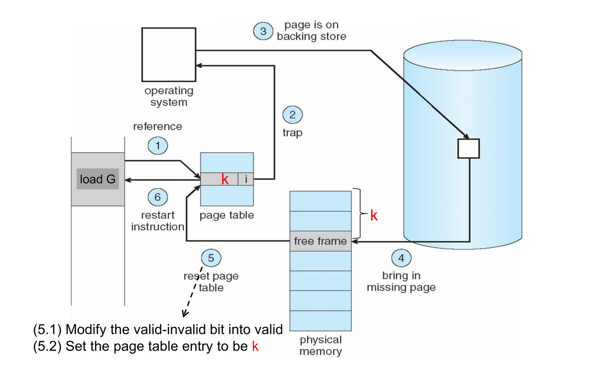
Performance
With page-fault probability (; means no faults, means every reference faults):
In practice memory access time ≪ page-fault time, which includes context switching and disk I/O. Example (not in the lecture): memory access 100 ns, fault time 8 ms. To keep EAT within 10% (110 ns): → , under one fault in 800,000 references.
AY17/18 S1 Q3c: TLB hit/miss and page fault combinations
Which combinations can occur?
- TLB hit, page in memory: yes.
- TLB hit, page fault: no. The TLB caches page-table entries of resident pages; a TLB hit means the page is in memory.
- TLB miss, no page fault: yes. The page-table entry is valid; the TLB is refilled.
- TLB miss, page fault: yes. The page is in neither (e.g. not yet loaded, or evicted).
3. Page Replacement
If a page fault finds no free frame, the OS finds a page in memory that is not really in use and pages it out.
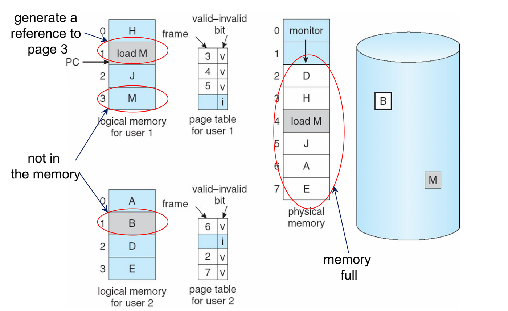
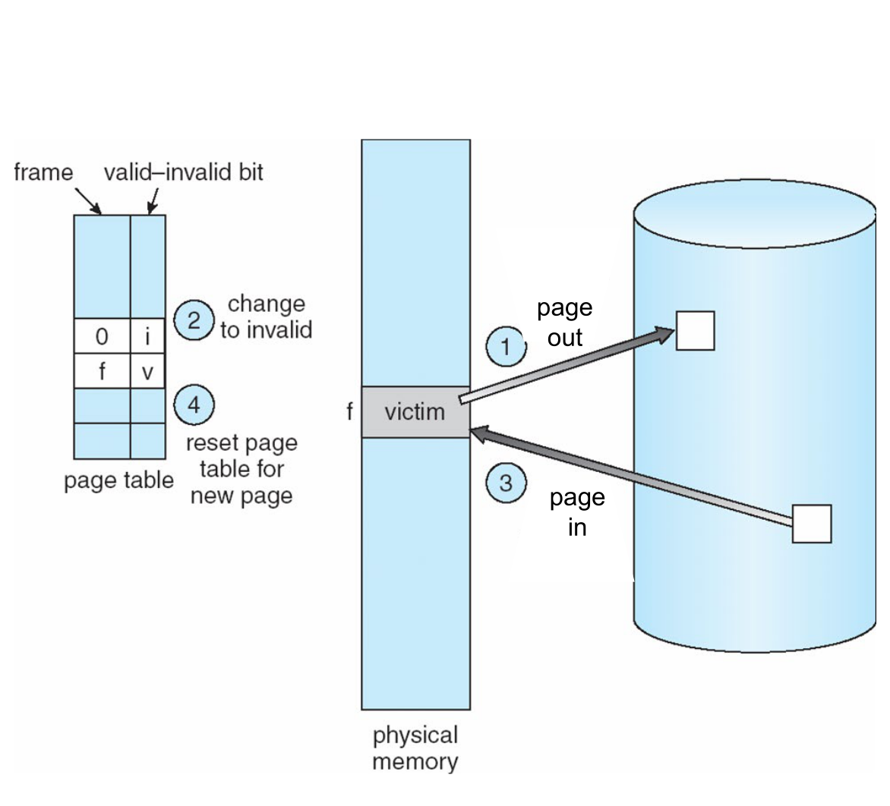
- Find a victim with the replacement algorithm and write it to the backing store (page-out).
- Mark the victim’s page-table entry invalid.
- Read the desired page into the freed frame (page-in).
- Update the new page’s page-table entry.
Two transfers (one out, one in) raise the fault time further. The modify (dirty) bit reduces this: a page not modified since it was loaded is not written back. Only dirty pages are written to the backing store.
Page replacement completes the separation of logical from physical memory: a large virtual memory can run on a small physical memory.
Past-paper T/F: Dirty and reference bits
- AY18/19 S1 Q3a(ii): If a page fault occurs and there is no free frame available, two page transfers, one in and one out, must be performed. False. The page-out is needed only if the victim is dirty.
- AY17/18 S2 Q3a(v): If its reference bit is set, a page need not be written back when replaced. False. Write-back depends on the dirty bit; the reference bit only says the page was used.
4. Page-Replacement Algorithms
Goal: the lowest page-fault rate. Evaluate an
algorithm by running it on a reference string of page
numbers and counting faults. Lecture string:
1, 2, 3, 4, 1, 2, 5, 1, 2, 3, 4, 5.
(
= fault.)
Normally more frames give fewer faults:
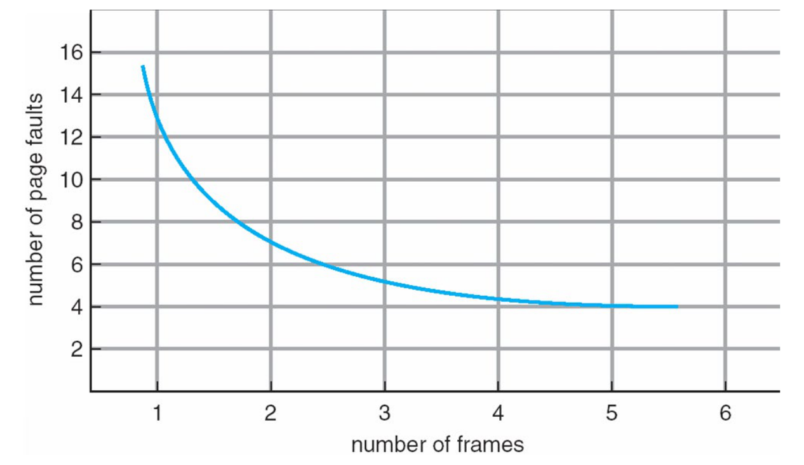
FIFO
Replace the page that has been in memory the longest (by load time). Hits do not change the order. The easiest algorithm.
| Ref | 1 | 2 | 3 | 4 | 1 | 2 | 5 | 1 | 2 | 3 | 4 | 5 |
|---|---|---|---|---|---|---|---|---|---|---|---|---|
| 3 frames | F | F | F | F | F | F | F | F | F | |||
| 4 frames | F | F | F | F | F | F | F | F | F | F |
3 frames: 9 faults. 4 frames: 10 faults. More frames gave more faults: this is Belady’s anomaly.
Optimal (OPT)
Replace the page that will not be used for the longest time. The OS cannot know future references, so OPT is theoretically best but practically infeasible; it is the benchmark for other algorithms. 4 frames: 6 faults.
| Ref | 1 | 2 | 3 | 4 | 1 | 2 | 5 | 1 | 2 | 3 | 4 | 5 |
|---|---|---|---|---|---|---|---|---|---|---|---|---|
| F1 | 1 | 1 | 1 | 1 | 1 | 1 | 1 | 1 | 1 | 1 | 4 | 4 |
| F2 | 2 | 2 | 2 | 2 | 2 | 2 | 2 | 2 | 2 | 2 | 2 | |
| F3 | 3 | 3 | 3 | 3 | 3 | 3 | 3 | 3 | 3 | 3 | ||
| F4 | 4 | 4 | 4 | 5 | 5 | 5 | 5 | 5 | 5 | |||
| Fault | F | F | F | F | F | F |
OPT has no Belady’s anomaly. Adding a frame only adds look-ahead, so it has the inclusion property: the pages in memory with frames are always a subset of those with frames.
LRU
Replace the page not used for the longest time: OPT looking backward instead of forward. It also has the inclusion property, so no Belady’s anomaly. 4 frames: 8 faults.
| Ref | 1 | 2 | 3 | 4 | 1 | 2 | 5 | 1 | 2 | 3 | 4 | 5 |
|---|---|---|---|---|---|---|---|---|---|---|---|---|
| F1 | 1 | 1 | 1 | 1 | 1 | 1 | 1 | 1 | 1 | 1 | 1 | 5 |
| F2 | 2 | 2 | 2 | 2 | 2 | 2 | 2 | 2 | 2 | 2 | 2 | |
| F3 | 3 | 3 | 3 | 3 | 5 | 5 | 5 | 5 | 4 | 4 | ||
| F4 | 4 | 4 | 4 | 4 | 4 | 4 | 3 | 3 | 3 | |||
| Fault | F | F | F | F | F | F | F | F |
Implementations:
- Counter: each page-table entry has a time-of-use field; the CPU increments a logical clock on every memory reference and copies it into the referenced page’s field. On a fault, evict the page with the smallest time-of-use (needs a search).
- Stack: a stack of page numbers in a doubly linked list. On a reference, move the page to the top; the bottom is the LRU page. Updates are expensive, but no search is needed.
LRU approximation: second chance (clock)
The hardware for exact LRU is expensive and generally not available, but many systems have a reference bit :
- starts at 0 when a page is loaded; the hardware sets when the page is referenced.
- Replace a page with . does not give the exact order of use, and many pages may have .
Second chance is a variation of FIFO. Take the oldest page as the candidate. If its , clear and treat the page as if it had just been loaded; otherwise evict it.
Clock implements second chance with a circular queue:
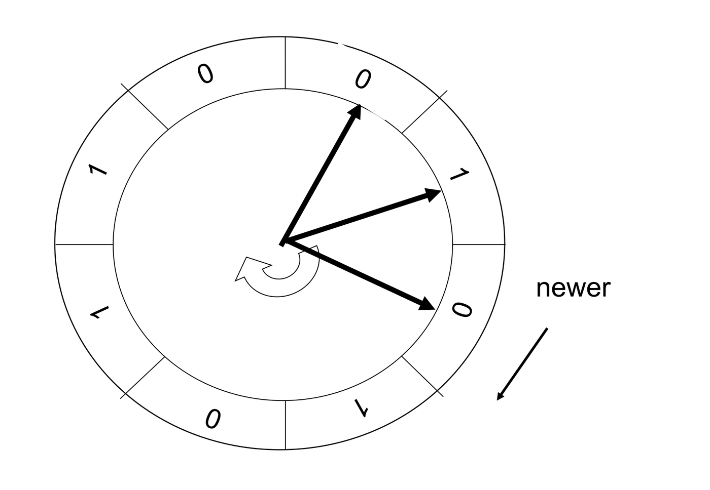
- The hand points to the oldest page.
- On a page fault, inspect the page under the hand. If : clear it and advance. If : evict it, put the new page there, and advance one position.
- A hit sets ; the hand does not move.
- Worst case: all bits set. The hand cycles the whole queue, clearing every bit (a second chance for every page), and evicts the page it started at. Clock then degenerates to FIFO.
Lecture clock trace, 4 frames, each cell is (page, ); the hand starts at F1 and wraps from F4 back to F1:
| Ref | 1 | 2 | 3 | 4 | 1 | 2 | 5 | 1 | 2 | 3 | 4 | 5 |
|---|---|---|---|---|---|---|---|---|---|---|---|---|
| F1 | 1,0 | 1,0 | 1,0 | 1,0 | 1,1 | 1,1 | 1,0 | 1,1 | 1,1 | 1,1 | 1,0 | 1,0 |
| F2 | 2,0 | 2,0 | 2,0 | 2,0 | 2,1 | 2,0 | 2,0 | 2,1 | 2,1 | 2,0 | 2,0 | |
| F3 | 3,0 | 3,0 | 3,0 | 3,0 | 5,0 | 5,0 | 5,0 | 5,0 | 4,0 | 4,0 | ||
| F4 | 4,0 | 4,0 | 4,0 | 4,0 | 4,0 | 4,0 | 3,0 | 3,0 | 5,0 | |||
| Fault | F | F | F | F | F | F | F | F |
8 faults. At ref 5 the hand clears 1 and 2 and evicts 3. At ref 3 it evicts 4 (). At ref 4 it clears 1 and 2 again and evicts 5. At the last ref 5 it evicts 3.
Belady’s anomaly summary
| Algorithm | Inclusion property | Belady’s anomaly possible? |
|---|---|---|
| OPT, LRU | Yes (“stack algorithms”) | No |
| FIFO, Clock | No | Yes |
Tutorial 9 Q3: FIFO, Clock, LRU on one string
Question: For each policy, count the page faults for the reference string 0 1 6 0 3 4 0 1 0 3 4 6 3 4, with 4 empty frames: (a) FIFO, (b) CLOCK, (c) LRU.
Solution (my working; Tutorial 9 solutions are not out yet):
(a) FIFO: 10 faults
| Ref | 0 | 1 | 6 | 0 | 3 | 4 | 0 | 1 | 0 | 3 | 4 | 6 | 3 | 4 |
|---|---|---|---|---|---|---|---|---|---|---|---|---|---|---|
| Evict | 0 | 1 | 6 | 3 | 4 | 0 | ||||||||
| Fault | F | F | F | F | F | F | F | F | F | F |
(b) Clock (new page R = 0, hit sets R = 1): 7 faults
- 0, 1, 6 load into F1–F3; 0 hits (); 3 loads into F4; hand back at F1.
- 4: F1 holds 0 with → clear, advance; F2 holds 1 with → evict 1. Hand at F3.
- 0 hits. 1: F3 holds 6 with → evict 6. Hand at F4.
- 0, 3, 4 hit ( on 0, 3, 4).
- 6: hand clears 3 (F4), 0 (F1), 4 (F2), finds 1 with in F3 → evict 1.
- 3, 4 hit. Faults: 0, 1, 6, 3, 4, 1, 6 = 7.
(c) LRU: 7 faults
| Ref | 0 | 1 | 6 | 0 | 3 | 4 | 0 | 1 | 0 | 3 | 4 | 6 | 3 | 4 |
|---|---|---|---|---|---|---|---|---|---|---|---|---|---|---|
| Evict | 1 | 6 | 1 | |||||||||||
| Fault | F | F | F | F | F | F | F |
Tutorial 10 Q1: Rebuild a reference string from LRU evictions
Question: A process has four frames and uses pages 1–5, with LRU replacement. Initially a page is loaded in each frame. The pages paged out, in order, are 3, 1, 2, 4, 5, N, 1 (N = no page paged out). (a) Which pages are initially loaded? (b) What is the reference string?
Solution (my working):
- With 5 pages and 4 frames, exactly one page is outside memory at any time, and a fault always loads that page. So each fault after the first loads the page evicted by the previous fault.
- The evictions 3, 1, 2, 4 are all of pages that were in memory, and a just-loaded page is the most recent, so it cannot be the next LRU victim. The first fault therefore loads 5. (a) Initially loaded: 1, 2, 3, 4, in LRU order 3, 1, 2, 4.
- Faults 1–5 load 5, 3, 1, 2, 4. After them the LRU order is again 3, 1, 2, 4.
- “N” is a hit. The next fault evicts 1, so 1 must be LRU: the hit is on 3 (any other hit leaves 3 as LRU). The last fault loads the page evicted by fault 5: 5.
- (b) Reference string: 5, 3, 1, 2, 4, 3, 5.
Additional Practice Q5: FIFO, second chance, LRU from a table
Question: Four frames: page 0 loaded at 126, last access 279, R = 0; page 1: 230, 260, R = 0; page 2: 120, 272, R = 1; page 3: 160, 280, R = 1. Which page will (a) FIFO, (b) second chance, (c) LRU replace?
Solution:
- (a) FIFO: earliest loaded → page 2 (120).
- (b) Second chance: oldest is page 2, but → clear, treat as just loaded. Next oldest is page 0 (126), → page 0.
- (c) LRU: earliest last access → page 1 (260).
Additional Practice Q6: Bounds on page faults
Question: M frames, initially empty. A reference string has length L and N distinct pages (N < L). (a) What are the lower and upper bounds on page faults under FIFO? (b) Different under LRU?
Solution:
- (a) Lower bound N: each distinct page faults at least once when first referenced. Upper bound L: at most every reference faults. (If , every algorithm faults exactly times.)
- (b) No, the bounds are the same for LRU: they depend only on the string, not on the algorithm.
AY15/16 S2 Q3d: A cyclic string that defeats FIFO and LRU
Question: Four initially empty frames. (i) How many faults does FIFO give for 0, 1, 2, 3, 4, 5, 0, 1, 2, 3, 4, 5? (ii) Will LRU differ? (iii) Design a realistic page-replacement algorithm that does better than FIFO and LRU for this sequence.
Solution:
- (i) 12. Six pages cycle through four frames, and every reference needs exactly the page evicted most recently.
- (ii) No, also 12. In a strict cycle longer than the frames, the LRU page is always the next one referenced.
- (iii) Most-recently-used (MRU) replacement: keep 0, 1, 2 and cycle the fourth frame. Faults: 0, 1, 2, 3, 4, 5, then 0, 1, 2 hit, 3 and 4 fault, 5 hits → 8 faults (the same as OPT). It uses only past references, so it is realistic. (The posted solution gives a modified clock with 10 faults; OPT itself is not realistic.)
Past papers: Belady’s anomaly and Clock
- AY18/19 S1 Q3d: (i) Define Belady’s anomaly. (ii) Does LRU suffer from it? (i) More frames give more page faults for a reference string. (ii) No. LRU is a stack algorithm: the pages in frames are always a subset of those in frames, so any fault with frames also happens with frames.
- AY16/17 S1 Q3a(iv): As the number of available page frames increases, the number of page faults will always decrease no matter which algorithm is used. False. FIFO can show Belady’s anomaly.
- AY18/19 S2 Q3d(ii): When does Clock behave like FIFO? When all reference bits are set: the hand clears every bit and evicts the oldest page.
5. Allocation of Frames
The OS decides how many frames each process gets:
- fewer frames per process → more processes fit in memory;
- too few frames → more page faults;
- beyond a certain number, more frames do not change the fault rate.
| Fixed allocation | Variable allocation | |
|---|---|---|
| Meaning | A process gets a fixed number of frames (e.g. equal or proportional allocation) | The number of frames can change over the process’s lifetime |
| On a fault | Replace one of that process’s pages | Local or global |
- Global replacement: a process picks a victim from all frames, so it can take a frame from another process. Its performance then depends on the other processes.
- Local replacement: a process picks only from its own frames. It may hinder other processes by holding on to its less-used pages.
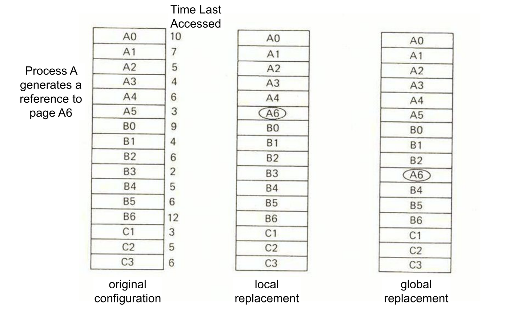
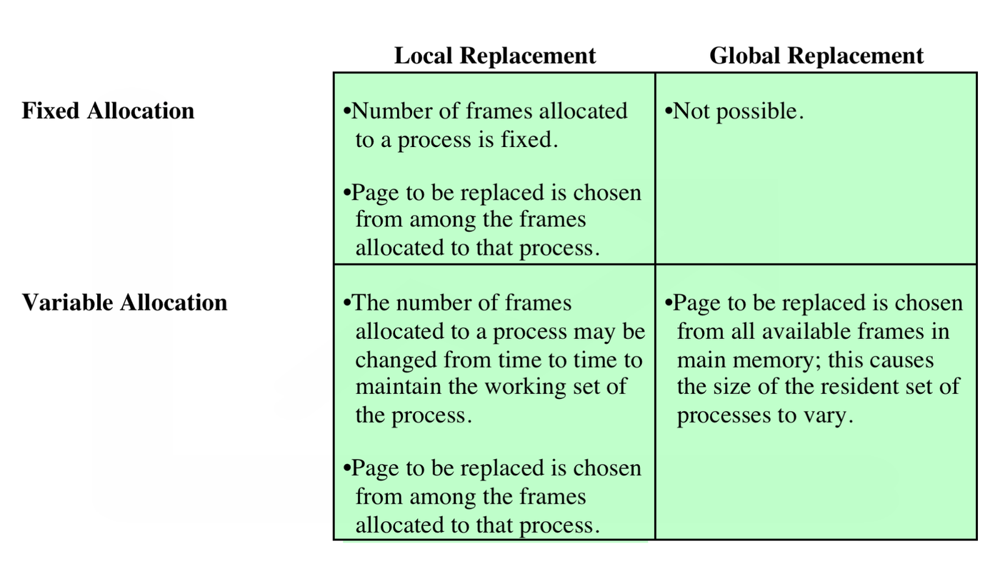
Fixed allocation requires local replacement. Variable allocation can use either local or global.
Past-paper T/F: Allocation and replacement scope
- AY16/17 S1 Q3a(vi): Both local and global page replacement policies can be used under the variable frame allocation scheme. True.
- AY18/19 S1 Q3a(iii), AY19/20 S1 Q3a(vi): Variable frame allocation implies a global replacement policy must be used. False. Either can be used.
- AY17/18 S1 Q3a(v): Fixed frame allocation can only use local replacement. True. Global replacement would change the frame counts.
AY17/18 S2 Q3b: Translation, fixed allocation, LRU vs. FIFO
Given: 12-bit logical address, 1 KB pages, 8 frames of physical memory, fixed allocation of 3 frames to this process.
| Page | Frame | Valid | Loaded | Last access |
|---|---|---|---|---|
| 0 | 2 | 1 | 120 | 200 |
| 1 | 7 | 1 | 150 | 160 |
| 2 | – | 0 | – | – |
| 3 | 4 | 1 | 140 | 180 |
- (i) Physical address bits: → 13 bits.
- (ii) Translate: offset 10 bits.
- 1052 → page 1, offset 28 → frame 7 → .
- 2080 → page 2, offset 32 → invalid → page fault, no physical address.
- (iii) Three consecutive faults under LRU (local, fixed): reference 2, 1, 3. Page 2 evicts page 1 (LRU, 160); page 1 then evicts page 3 (180); page 3 then evicts page 0 (200).
- (iv) Same references under FIFO: page 2 evicts page 0 (loaded first, 120); pages 1 and 3 then hit. Only one fault, so the answer differs.
AY19/20 S1 Q3d: LRU trace on hex addresses
Given: 16-bit logical and physical addresses, 4 KB pages, LRU with local replacement. Resident: page 1 → frame 1 (last ref 268), page 7 → frame 8 (230), page 10 → frame 4 (245), page 12 → frame 15 (275). References: 0x76F4, 0xB89F, 0x1A86, 0x6987, 0x7E56, 0xD908.
- (i) → 12 offset bits; the top hex digit is the page number.
- (ii), (iv) Number the references from tick 276:
| Tick | Address | Page | Result | Physical |
|---|---|---|---|---|
| 276 | 0x76F4 | 7 | Hit (frame 8) | 0x86F4 |
| 277 | 0xB89F | 11 | Fault: evict page 10 (245) from frame 4 | 0x489F |
| 278 | 0x1A86 | 1 | Hit (frame 1) | 0x1A86 |
| 279 | 0x6987 | 6 | Fault: evict page 12 (275) from frame 15 | 0xF987 |
| 280 | 0x7E56 | 7 | Hit (frame 8) | 0x8E56 |
| 281 | 0xD908 | 13 | Fault: evict page 11 (277) from frame 4 | 0x4908 |
3 page faults.
- (iii) Final frame column: page 1 → 1, page 6 → 15, page 7 → 8, page 13 → 4; every other page shows “–”.
6. Thrashing
If a process does not have “enough” pages, its page-fault rate is very high, which gives low CPU utilization. The common wisdom for low utilization is to raise the degree of multiprogramming, so another process is added, which takes frames and makes CPU utilization drop further.
Thrashing: a process is busy bringing pages in and out, and no useful work is done.
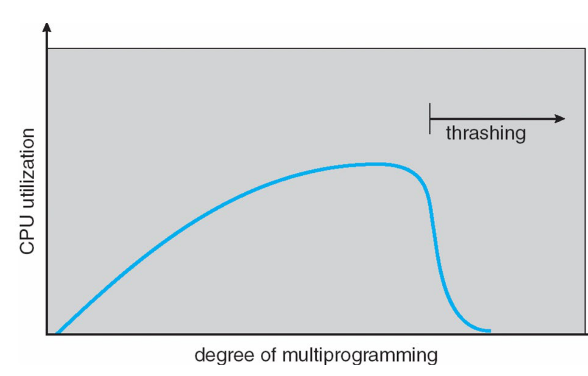
Two strategies combat it: the working-set model and the page-fault frequency scheme.
Tutorial 10 Q3: CPU 20%, paging disk 97.7%
Question: A demand-paging system measures CPU utilization 20%, paging disk 97.7%, other I/O devices 5%. Which (if any) will probably improve CPU utilization? (a) faster CPU, (b) bigger paging disk, (c) increase multiprogramming, (d) decrease multiprogramming, (e) more main memory, (f) faster hard disk or multiple hard disks, (g) increase the page size.
Answer (my working): the system is thrashing (CPU idle, paging disk saturated).
| Option | Helps? | Why |
|---|---|---|
| (a) Faster CPU | No | The CPU is already idle, waiting for pages |
| (b) Bigger paging disk | No | Size is not the bottleneck; speed is |
| (c) More multiprogramming | No | Fewer frames per process → more faults |
| (d) Less multiprogramming | Yes | Each remaining process gets enough frames |
| (e) More main memory | Yes | More frames → fewer faults |
| (f) Faster / more disks | Yes | Faults are serviced faster |
| (g) Larger pages | Unclear | Fewer faults if access is sequential; more wasted memory (and possibly more faults) if access is scattered |
Past papers: Thrashing
- AY15/16 S2 Q3c: Explain thrashing, its cause, and a strategy to prevent it. A process busy paging in and out, doing no work. Cause: too few frames for its pages → high fault rate → low CPU utilization → the OS adds processes → utilization drops further. Prevention: working-set model (if , suspend a process) or page-fault frequency (give or take frames to keep the fault rate between bounds).
- AY16/17 S1 Q3a(v): Thrashing can be temporarily alleviated by swapping out some processes. True.
- AY17/18 S2 Q3a(vi): Thrashing can be detected by comparing CPU utilization with the degree of multiprogramming. True. Low utilization at high multiprogramming signals thrashing.
- AY19/20 S1 Q3a(v): Using demand-paging increases the degree of multiprogramming and hence always improves CPU utilization. False. Too much multiprogramming causes thrashing.
- AY18/19 S2 Q3e: How do physical memory size, degree of multiprogramming, and secondary-storage access time affect performance? More memory → more pages resident → fewer faults. More multiprogramming raises utilization up to a point, then causes thrashing. Disk access time dominates the page-fault time, so a slow disk raises EAT sharply.
7. Locality and the Working-Set Model
Locality of reference: processes refer to pages in a localized manner.
- Temporal locality: locations referred to just before are likely to be referred to again (references cluster in time).
- Spatial locality: code and data are usually clustered physically.
Lecture example:
sum = 0;
for (i = 0; i < n; i++)
sum += a[i];
return sum;| Temporal | Spatial | |
|---|---|---|
| Data | sum is referenced in every iteration |
elements of a[] are accessed consecutively |
| Instructions | the loop body runs repeatedly | instructions run in sequence |
During its lifetime, a process’s references are confined to a subset of pages, which leads to the working-set model.
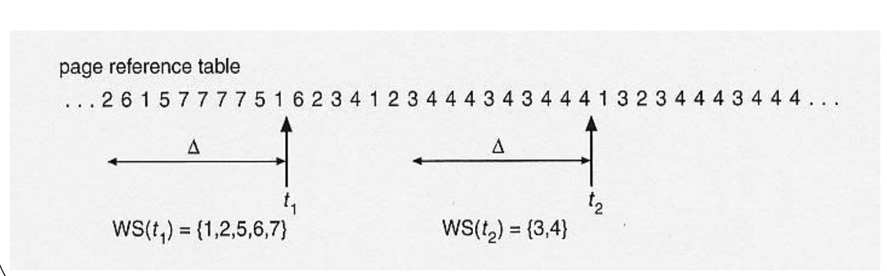
- Working-set window : a fixed number of page references. With , the working set at is and at is .
- (working-set size of ): number of distinct pages referenced in the most recent references (varies in time).
- : total demand for frames; = total frames.
- If → thrashing. Policy: if , suspend (swap out) one of the processes.
Page-fault frequency (PFF)
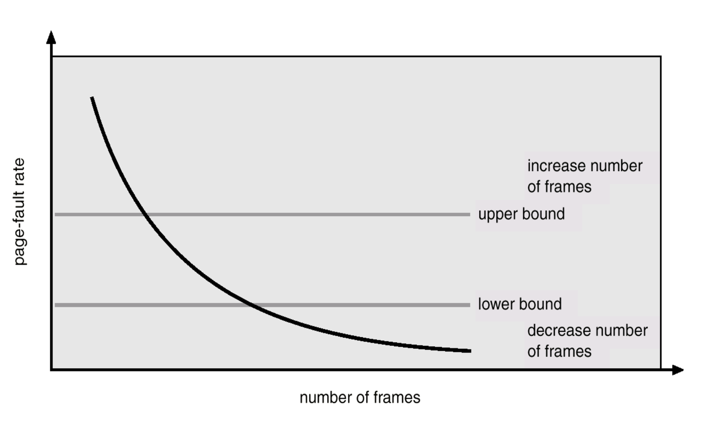
Set an “acceptable” page-fault rate per process:
- rate too low → take a frame from the process;
- rate too high → give the process a frame;
- if the rate rises and no frame is free, suspend (swap out) a process.
Tutorial 10 Q2: LRU vs. working-set faults
Question: A process has four frames. Frame 0 holds page 1 (loaded 60, last access 161); frame 1 holds page 0 (130, 160); frame 2 holds page 3 (26, 162); frame 3 holds page 2 (20, 163). The remaining reference string is 4, 0, 0, 0, 2, 4, 2, 1, 0, 3, 2. (a) How many faults with LRU? (b) With a working-set window of four, how many faults if only the pages in the working set are kept in memory (instead of a fixed allocation of four frames)?
Solution (my working):
- (a) LRU: 4 faults. LRU order by last access: 0
(160), 1 (161), 3 (162), 2 (163).
- 4 → evict 0. 0 → evict 1. 0, 0, 2, 4, 2 hit. 1 → evict 3. 0 hits. 3 → evict 4. 2 hits.
- Faults on 4, 0, 1, 3.
- (b) Working set, : 7 faults. The previous four references (times 160–163) are 0, 1, 3, 2. A reference faults if its page is not among the last four references before it.
| Ref | 4 | 0 | 0 | 0 | 2 | 4 | 2 | 1 | 0 | 3 | 2 |
|---|---|---|---|---|---|---|---|---|---|---|---|
| WS before | 0,1,2,3 | 1,2,3,4 | 0,2,3,4 | 0,2,4 | 0,4 | 0,2 | 0,2,4 | 0,2,4 | 1,2,4 | 0,1,2,4 | 0,1,2,3 |
| Fault? | F | F | F | F | F | F | F |
The working set shrinks to two pages during the run of 0s, so pages 2 and 4 drop out and must be fetched again.
AY18/19 S1 Q3e: Window too small or too large
- too small: each process keeps few pages in memory → high fault rate; many processes fit → high degree of multiprogramming.
- too large: each process keeps many pages → low fault rate; few processes fit → low degree of multiprogramming.
AY17/18 S2 Q3c and AY16/17 S1 Q3c: Locality in code
- AY17/18 S2 Q3c: (i) Explain locality. (ii)
Which loop has better locality? C stores 2-D arrays row by
row. With
i(row) as the outer loop andjinside, consecutive accesses stay in one row, which lies in one page: strong spatial locality. Withjoutside, every inner step jumps to a different row, which is a different page: many more pages touched and many more faults. Thei-outer loop is better. - AY16/17 S1 Q3c: Array or linked list under demand paging? An array is allocated as one contiguous block, so its elements share pages. A linked list allocates nodes on demand, scattered over many pages, so traversing it causes more page faults.